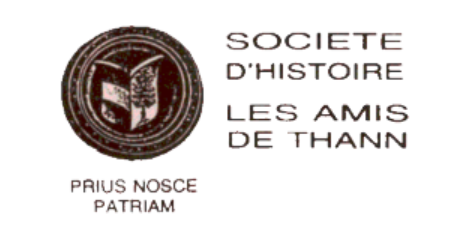

Histoire de l'association
La Société d’Histoire "les Amis de Thann" a été fondée dans les derniers jours de la Grande guerre, le 8 septembre 1918, dans le bureau même du capitaine administrateur de la ville sous l’impulsion du Duc Edouard Mortier de Trévise, directeur du foyer franco-américain de Saint-Amarin. Cette toute nouvelle association s’occupe dès la fin de la guerre de trouver un local pour le futur musée qui doit regrouper les œuvres mises à l’abri à Sewen au fond de la vallée de la Doller durant les hostilités. Ces objets seront rassemblés au « Foyer du Soldat » de Thann, La nouvelle société s’était fixée comme premier objectif "de soustraire aux destructions violentes, comme aux dispersions lentes" tous les objets pouvant "faire connaître les coutumes et les goûts des Alsaciens, et leur attachement à la France". Le comité mis en place désigna Ferdinand Scheurer comme président.
Charles Weissbeck conservateur du musée abrita les premières collections dans une salle du collège ; plus tard elles seront présentées dans une maison Place des Vignerons.
En 1932, J. Baptiste Weiss-Blocher succéda à Ferdinand Scheurer. Cette période de l’entre deux guerres fut marquée par la présentation de deux grandes expositions : en 1937 "le culte de Saint-Thiébaut" et "le centenaire du chemin de Fer de Mulhouse à Thann en 1939".
Durant l’occupation, "les Amis de Thann" devinrent "Tanner Geschichtsfreunde" ; l’association publia son premier annuaire en 1943 en collaboration avec les autres sociétés d’histoire locale du voisinage. Au moment de la débâcle allemande en décembre 1944, les collections du musée furent gravement endommagées. Il fallut alors trouver un nouveau local pour y installer les collections.
8 février 1947, les statuts de l’association furent modifiés. La nouvelle dénomination "Société d’Histoire, les Amis de Thann" élargit ses activités et à côté de la conservation du patrimoine, ajoutait la recherche historique. Louis Bockel assurait alors la présidence de l’association. Le maire, Modeste Zussy proposa d’installer le musée dans les locaux de la halle aux blés qui avaient autrefois servi de salle des fêtes. En 1957, la nouvelle municipalité, conduite par Pierre Schiélé inaugura le musée dans ce cadre, si pittoresque. Pierre Boigeol, épaulé de son comité, s’efforça de réaménager systématiquement les collections du musée selon les principes muséologiques modernes.

René Kirner succéda comme conservateur du musée à Ch. Weissbeck en 1968. En 1974, Joseph Baumann prit la relève de Pierre Boigeol à la tête des "Amis de Thann". La recherche historique progressa grandement avec la publication de l’Inventaire Topographique des richesses patrimoniales du canton de Thann en 1980 et "L’histoire de Thann, des origines à nos jours" de Joseph Baumann en 1981. Le 25 janvier 1985 l’assemblée générale de la Société d’Histoire "les Amis de Thann", désigna, sur proposition du président sortant, de remettre "les clefs de la maison" à André Rohmer. Le comité élargi, qui s’est mis au travail, a pu réaliser avec l’appui de la ville de Thann la rénovation intérieure de la halle aux blés et la mise en place d’une salle d’exposition aux normes nouvelles. Au printemps 1986, la société a publié son premier bulletin, "Petite et Grande Histoire". En 1988, Yves Boeglin succéda à René Kirner après avoir été son adjoint. Pendant 13 ans, grâce à son énergie et ses compétences, Yves Boeglin a mis inlassablement en valeur les richesses du musée avant de laisser sa place en 2001 pendant 2 ans à son adjoint Marc Brenin. Depuis 2003, Albert Ehret a pris la suite en effectuant notamment un remarquable travail d'inventaire (le récolement demandé par le Ministère de la Culture).
Lors de l’assemblée générale de l’an 2000, les 'Amis de Thann' ont élargi leur compétences à "la recherche et l’étude des familles du Pays de Thann" en créant une section de généalogie.